Wat glo ons?
’n Moderne Afrikaanse gemeente met die Bybel as fondament. Collage aanbid die Vader, die Seun en die Heilige Gees.
Meer oor ons
Ons Droom
Collage is ’n gemeente met ’n droom dat ons mense kan ontwikkel wat die wêreld verander, ’n kerk kan bou wat ’n hele stad beïnvloed, en dat ons saam ’n stad op ’n berg kan wees waarvan die lig nie weggesteek kan word nie.
Ons wil jou nooi om deel te word van die droom.
Ons skep geleentheid waar jy op ’n eenvoudige, egte manier God weekliks kan ervaar, en ruimte vir elke lewensfase sodat mense gemotiveer word om passievol en voluit te lewe.
Ons skep ook geleentheid waar jy op ’n eenvoudige, egte manier God weekliks kan ervaar, en ruimte vir elke lewensfase sodat mense gemotiveer word om passievol en voluit te lewe.
Wat om te verwag tydens die erediens?
- Gratis filter koffie in die kuier area voor en na die diens.
- Vriendelike mense. Vra gerus vir die gasvryheidspan by die ingange indien jy enigiets hulp of inligting benodig.
- Gemaklike en ontspannende atmosfeer in informele kleredrag.
- ’n Veilige en pret beleide omgewing vir jou kinders.
- Daar is Kinderstad vir 3 jaar (reeds van die oef) tot graad 7 en Radikaal vir hoërskool kinders waar jou kind op hulle vlak bedien word.
- Relevante en praktiese preke wat jou in staat stel om die Woord wat lewendig word, te lewe. Die diens is tipies 60 minute lank.
Die span
Ons span
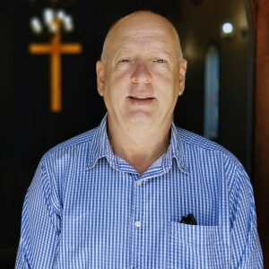
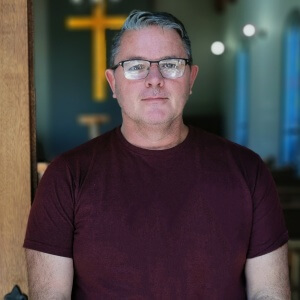
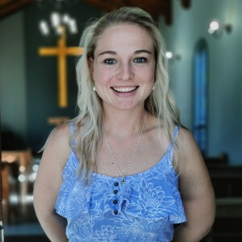
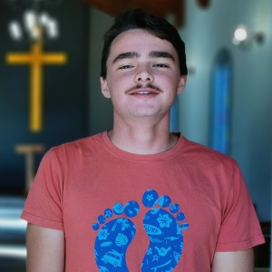
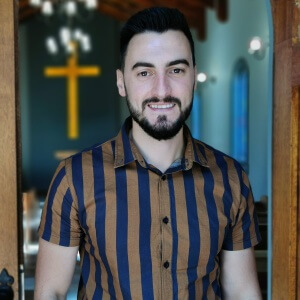
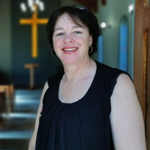
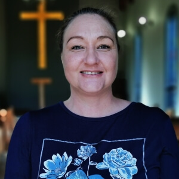
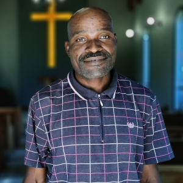
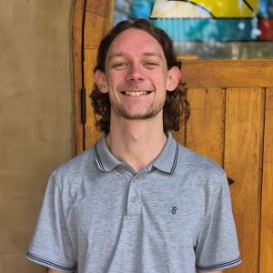
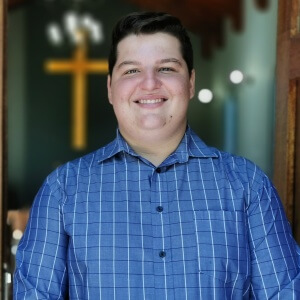
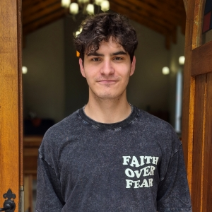
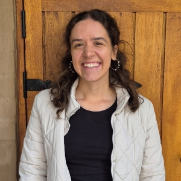
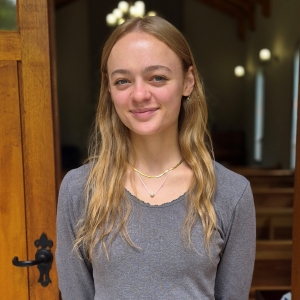
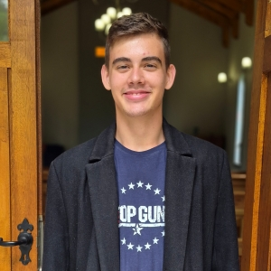
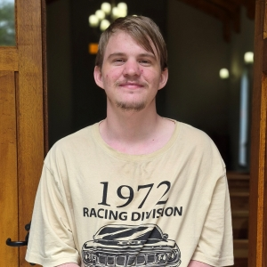
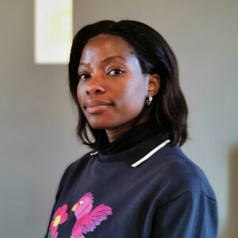
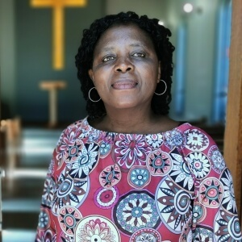
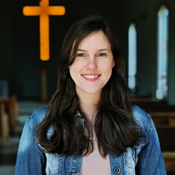
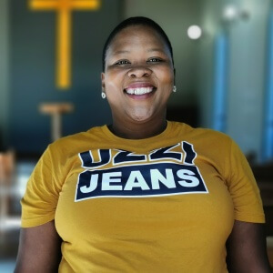
Excel Opleiding
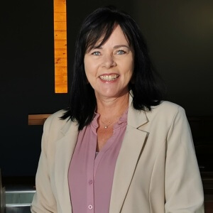
Berading Sentrum
Mediese Kliniek
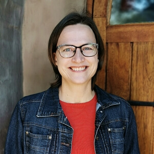
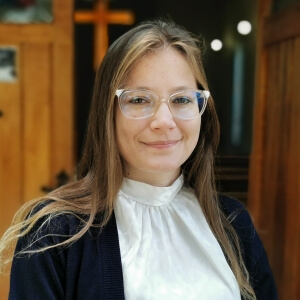
Leerstellings
Die dokumente self bly op collage.org.za. Hier is die volledige lys.
- Collage aanbid die Vader, Seun en Heilige Gees PDF
- Die Bybel PDF
- Wie is Jesus? PDF
- Wat is ’n Christen PDF
- Wat is waarheid? PDF
- Kerkwees PDF
- Die missionale sirkel PDF
- Sabbat of Sondag PDF
- Die huwelik PDF
- Egskeiding en hertrou PDF
- Begrafnis of verassing PDF
- Selfmoord PDF
- Is jou streep getrek? PDF
- Geloof in moeilike tye PDF